Horas viram minutos
Nada de linha do tempo, keyframe ou aula de After Effects.
Plugin para o Claude · motion no automático
Você descreve o vídeo (ou manda sua gravação) e o Claude faz o resto: roteiro, animação, legenda, cortes e som. O que levava horas sai em minutos.
de R$ 97 · pagamento único · acesso na hora
Nada de linha do tempo, keyframe ou aula de After Effects.
Algo muda na tela a cada 3 segundos: é isso que segura o dedo.
Gancho forte, legenda dinâmica e ritmo de Reels em todo vídeo.
Seu produto aparece em tela de celular, número subindo e CTA no fim.
Você sabe o que postar. Mas transformar a ideia em um vídeo que prende leva horas: cortar os erros, legendar palavra por palavra, colocar animação, achar efeito sonoro…
As saídas de sempre não ajudam: editor de vídeo custa caro, aprender motion leva meses e template pronto deixa seu vídeo igual ao de todo mundo.
O Plugin Play coloca um editor de motion dentro do Claude. Você conversa em português, aprova o roteiro, aprova a prévia e recebe o MP4 pronto para postar.
Você aprova só duas vezes: o roteiro e a prévia.
Mande sua gravação falando. Ele tira silêncios, "éé" e erros, dá zoom no rosto a cada frase, legenda e anima as palavras-chave.
Só o assunto. Ele cria roteiro e animação completos, com efeitos ou sem som.
Mande um áudio. Ele transcreve e anima cada frase no tempo certo.
Diga seu nicho e receba 3 roteiros com gancho pronto. Escolha um e ele faz.
Suas cores, sua fonte e seu @ salvos uma vez e usados em todo vídeo.
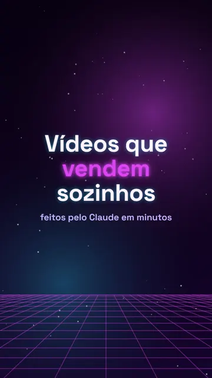
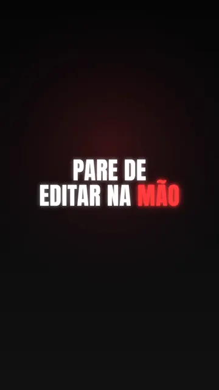
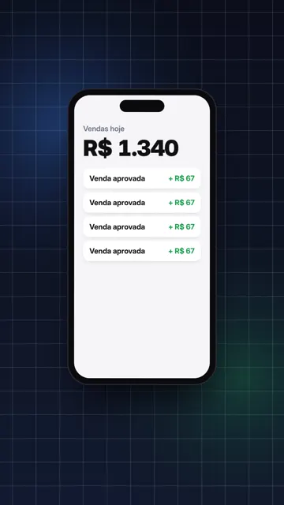
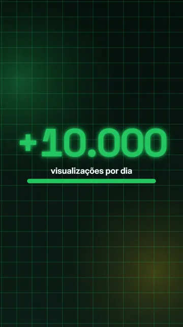
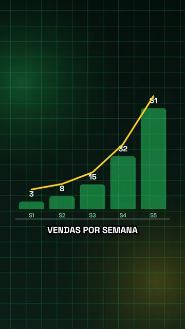
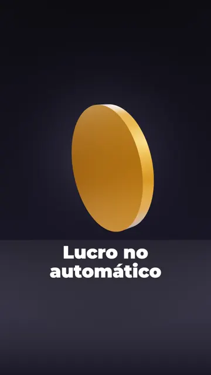
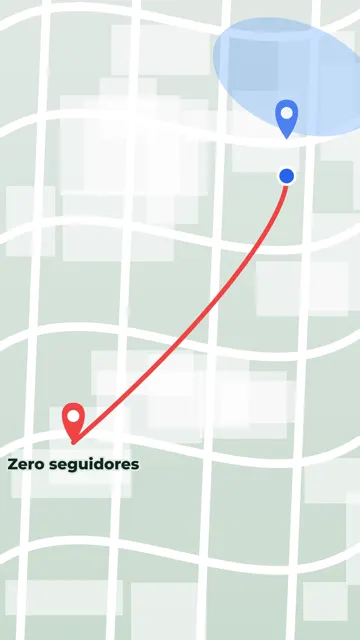
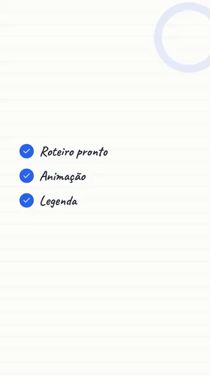
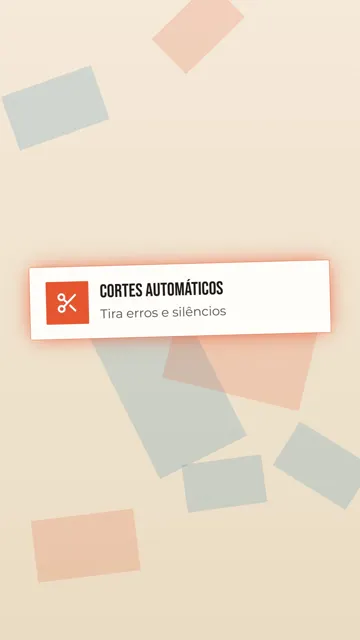
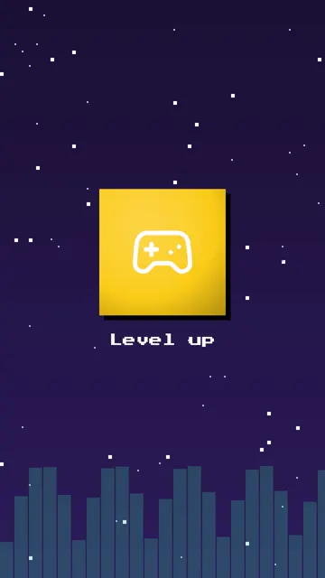
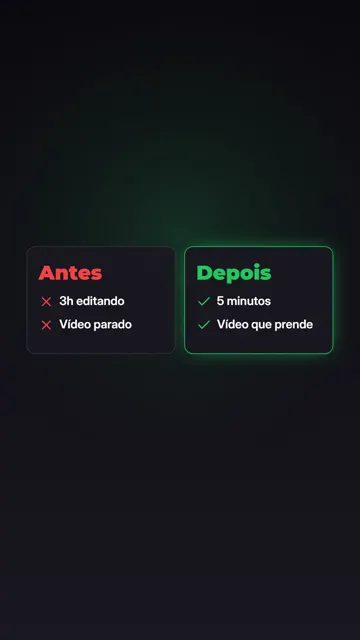
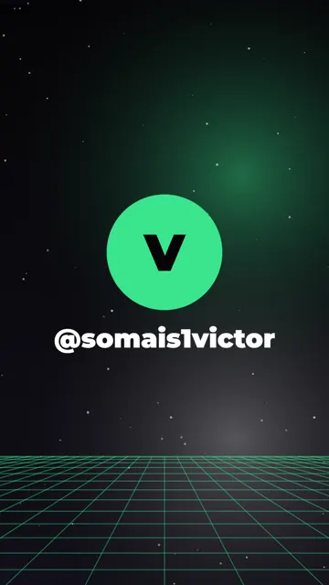
Oferta de lançamento
de R$ 97 por
R$47
pagamento único · tudo liberado na hora
Quero o Plugin PlayPix · Cartão · Compra segura
Instalou, testou e não gostou? Peça o reembolso em até 7 dias e devolvemos 100% do valor. Sem perguntas.
Não. O Plugin Play roda no app do Claude para computador (Windows ou Mac), porque o vídeo é gravado no seu computador. Depois é só mandar o MP4 para o celular e postar.
Sim, o Claude Pro (ou superior), assinado direto na Anthropic. O plano grátis não roda plugins.
Não. É uma ferramenta: um plugin que você instala no Claude. A área de membros tem aulas curtas só de instalação e do primeiro vídeo.
Não. Você conversa em português. O próprio Claude instala o que precisa e faz a edição.
O acesso chega no seu e-mail. Na área de membros você baixa o arquivo, envia em Configurações → Plugins no app do Claude e pede "Plugin Play, instala pra mim". Leva uns 10 minutos.
Tem o passo a passo em vídeo e em PDF, e suporte pela área de membros.
Sim. Os vídeos que você cria são seus: pode postar, vender e usar em anúncios.
Sim: vertical (Reels/TikTok), quadrado, 4:5 e horizontal (YouTube).
Sim. Você configura uma vez e todos os vídeos saem com a sua marca.
P.S.: um único vídeo animado encomendado a um editor custa mais do que o Plugin Play inteiro. E você tem 7 dias para testar sem risco.